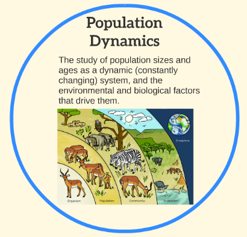

Changes in Population Over Time Factors that Affect Population Growth

Population Dynamics
The change in a population over time.
Factors causing a change in Population size are:
- Birth
- Death
- Immigration
- Emigration

Population Growth Rate
The change in a population over a unit time period.
Usually expressed as a percentage of the number of individuals in the population at the beginning of this period.
(Birth+Immigration) - (Death + Emigration) x 100
Initial Population
Population Growth Rate
- Positive value = Expanding Population Size
- Negative value = Declining Population Size
- Zero value = Stable Population Size

Models of Population Growth

Exponential Growth
A pattern of population growth in which organisms reproduce continuously at a constant rate.
For exponential population growth, dN = (B-D)
dt
Here, dN = Change in Population Size.
dN = Change in Population Size over Time.
dt
N = Population Size.
B = Number of Births.
D = Number of Deaths.
d = indicate “incremental change” or “change in.”
dt = change in time.

Per capita Growth Rate(r):
- Difference between the per capita birth rate and the per capita death rate of a population.
Per capita Birth Rate (b):
- Number of births in the population during the specified time period divided by the population size.
b = B
N
Per capita Death Rate (d):
- Number of deaths divided by the population size.
d = D
N

Under ideal conditions:
üåû Unlimited food and shelter
üåû No Parasites
üåû No Predators
üåû No Diseases
Organisms Per capita growth rate(r) is high.
This maximum per capita growth rate (rmax) is the population’s
intrinsic rate of increase.
Here, dN = rmax N
dt
Also, for many organisms, rmax ∝ 1
Generation time
Limitations of Exponential model:
üåûEnvironmental limitations prevent populations
from experiencing continuous growth.
üåûMany populations do not reproduce
continuously. They have breeding periods,
where there is a sudden large birth rate.
Logistic Model of Population Growth
A model that describes limited population growth, often due to limited resources or predation.
The maximum number of individuals that an environment can support indefinitely is its Carrying Capacity (K).
Logistic model of population growth describes growth that levels off as the size of a population reaches the carrying capacity.


Limitations of Logistic Model of Population Growth:
Assumes:
All individuals reproduce, die, and use resources at an identical rate.
Carrying capacity is constant and not affected by environmental fluctuations.
No migration and populations don’t interact among themselves.
In reality, very few populations meet the assumptions made by the logistic growth model.
|
Unlimited resources
|
Limited resources
|
Mark the features with the given colour codes for each of the Growth Curves:
No carrying capacity = Red
Unlimited resources = Yellow
Limited resources = Purple

Factors that affect Population Growth
Limiting Factor
A factor that limits the growth of a population
- Can be abiotic or biotic
- Can cause populations to either increase or decrease in size.
Two types of limiting factors:
- Density-dependent factors- Related to the density of a population.
- Density-independent factors- Generally not related to the density of a population.
Influenced by population density, it has a greater impact as the population density increases.
Examples are:
- Competition
- Diseases
- Predation
- Space limitations
- Magnitude of Factors ∝ Population size
Competition
An interaction in which both competing populations lose access to some resources.
When resources are limited, there is constant competition for food, water, space, and shelter.
Can be of two different types:
- Interspecific competition (between members of different species)
- Intraspecific competition (between members of the same population)


Did you know?
In Lake Winnipeg in Manitoba, there is a competition between northern pike and walleye.
They both prey on the yellow perch population for food.
However, the competition is only apparent if the population densities of the pike and walleye are high or the population density of the yellow perch is low.
Predation
When one organism (Predator) kills and eats another organism (Prey).
By consuming the prey, predators increase their own population while decreasing the population density of the prey.
Lack of predation can cause problems for the prey population. Without predation, the prey population can increase rapidly. This can lead to a depletion of resources and can increase the risk of disease.
An unusual predator is a carnivorous plant called the Venus flytrap plant that feeds on insects and spiders to help it compete in its nutrient-poor habitat.

Did you know?
Many moose populations in Ontario are limited by wolf predation.
This happens when wolves kill and eat more moose than the number of calves that are born each year.
Conversely, when wolf populations decrease, the moose population increases.
Diseases
Disease in a population increases with the density of the population.
High population density makes the spread of disease easier.
Disease can have catastrophic effects on a population as well as on all the populations that interact with it in an ecosystem.

Space Limitations
Crowding occurs in high-density populations with limited space.
Affects the growth, size, and survival of the individuals in a population
Individuals living in extremely dense populations are unable to harvest enough resources. They grow slowly and tend to be small, weak, and less likely to survive.
In addition, when resources are in short supply, individuals in the population have less energy for reproduction after meeting their basic maintenance needs.
Females in a crowded population may produce fewer or smaller offspring, decreasing the possibility of survival.
Crowding also affects population size by allowing disease to spread more easily and/or encouraging migration away from the original area of high density.

Not Crowded Enough: The Allee Effect
Occurs when a population cannot survive or fails to reproduce enough to offset mortality once the population density is too low.
Effect can produce an increased extinction risk for very small populations through reduced individual fitness.
Plants that grow at low densities can suffer from the Allee effect as a result of pollen limitation.
Did you know?
The great auk was a large, flightless, penguin-like bird that lived along the coast of the North Atlantic Ocean.
It was particularly easy to catch, so it was over-hunted.
The female great auk laid only one egg per year and, because of the uncontrolled over-hunting, the species was reduced to the point where it could not recover.
By 1844, the great auk had become extinct.
Did you know?
The Allee effect also played a role in the extinction of the passenger pigeon.
In the 1800s, there were 3 to 5 billion passenger pigeons worldwide.
One-fourth of the population lived in North America, in the deciduous forests of Southern Ontario, Manitoba, and Eastern Canada, as well as the Eastern United States.
Passenger pigeons laid only one egg per nest and would only breed in a large colony.
Commercial over-hunting for their feathers and meat, as well as destruction of their habitats, reduced their populations to the point where the species could not recover. The passenger pigeon was completely eliminated by the early 1900s.
Minimum viable population size
The least number of individuals ensures the continued existence of a population for a determined period of time, regardless of environmental change or disaster.
They are likely to survive both predictable and unpredictable environmental variations.
If, Population size < Minimum viable population size, the chances of extinction increase dramatically.
However, the minimum viable population size is only a prediction.

Density Independent Factors
A factor that influences population regulation regardless of population density.
Some examples:
- Natural disasters
- Forest fire
- High temperature
- Climate change

Pine tree and mountain Pine beetle
Mountain Pine Beetle burrows into Pine trees, eating the soft tissue beneath the bark.
Too many beetles can overwhelm a tree and kill it.
This had not been a serious problem until recently, because beetle populations were kept in check by winter frosts and temperatures that routinely dropped below –30 °C.
In recent years, the winter temperatures have not been low enough to limit the beetle population significantly.

A substantially higher beetle survival rate and the lack of moisture have stressed trees, reducing their ability to defend themselves against beetle attacks.
In addition to the loss of trees and the financial impact on timber production, the swaths of dead trees are emitting enormous quantities of carbon dioxide into the atmosphere as they decompose.
This is further exacerbating our climate problems and creating what scientists refer to as a positive feedback loop.
Positive feedback amplifies the impact of climate change.
An increased level of carbon dioxide in the atmosphere has led to warmer winters, which have caused the mountain pine beetle infestation.
The subsequent devastation of the pine tree population by the mountain pine beetles has caused the trees to produce more carbon dioxide again increasing the amount of atmospheric carbon dioxide, which may potentially warm our winters even more.